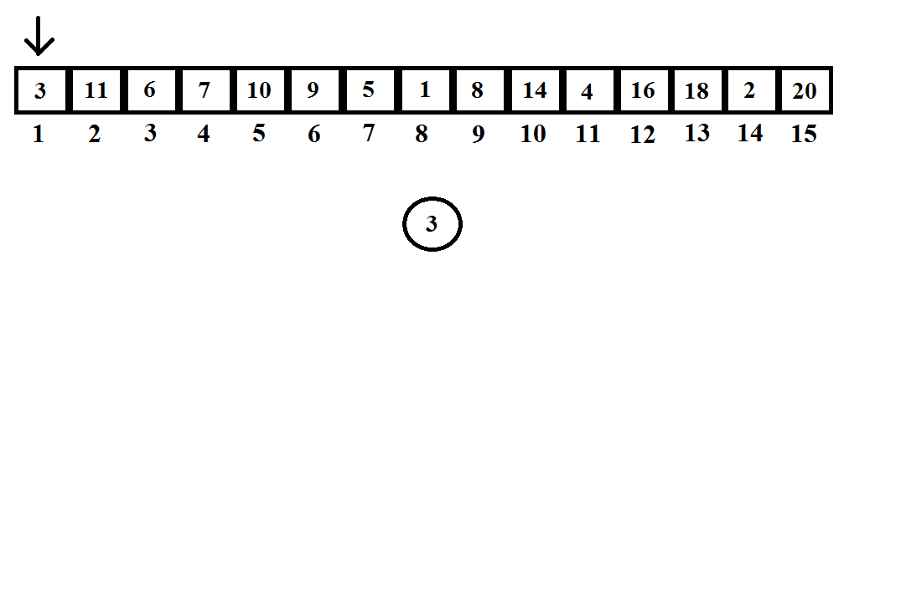

Sterta wyróżnia dwa rodzaje:
-sterta minimalna gdzie wartości są układane od najmniejszej do największej
-sterta maksymalna gdzie wartości sa układane od największej do najmniejszej
1.Do wykonania stery potrzebujemy tablicy lub listy z wartościami.
2.Z posiadanych wartości tworzymy drzewo binarne dodając wartości kolejno od lewej strony.
3.Po utworzeniu drzewa sprawdzamy dwie sąsiadujące wartości i porównujemy która jest mniejsza w przypadku drzewa minimalnego lub większa w przypadku maksymalnego.
4.Po ustaleniu mniejszą lub większą wartość porównujemy z rodzicem. Załóżmy że tworzymy drzewo minimalne i chcemy sprawdzić czy rodzic jest mniejszy.
Aby to zrobić bierzemy indeks i danej wartości i dzielimy przez 2 zaokrąglając w dół.
5.Jeśli nadal nasza wartość jest mniejsza wykonujemy operacje ponownie, jeśli nie zamieniamy wartości miejscami.
6.Wykonujemy analogiczną operację dla wszystkich liści.
Przykład
